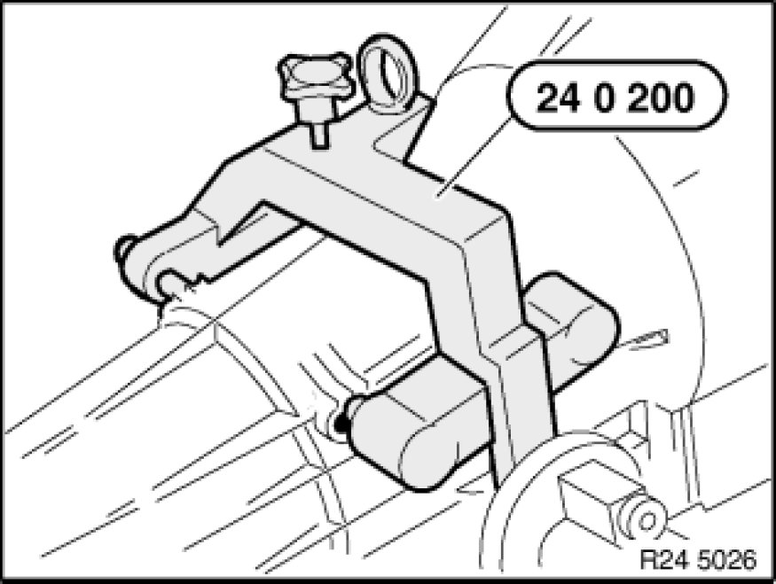
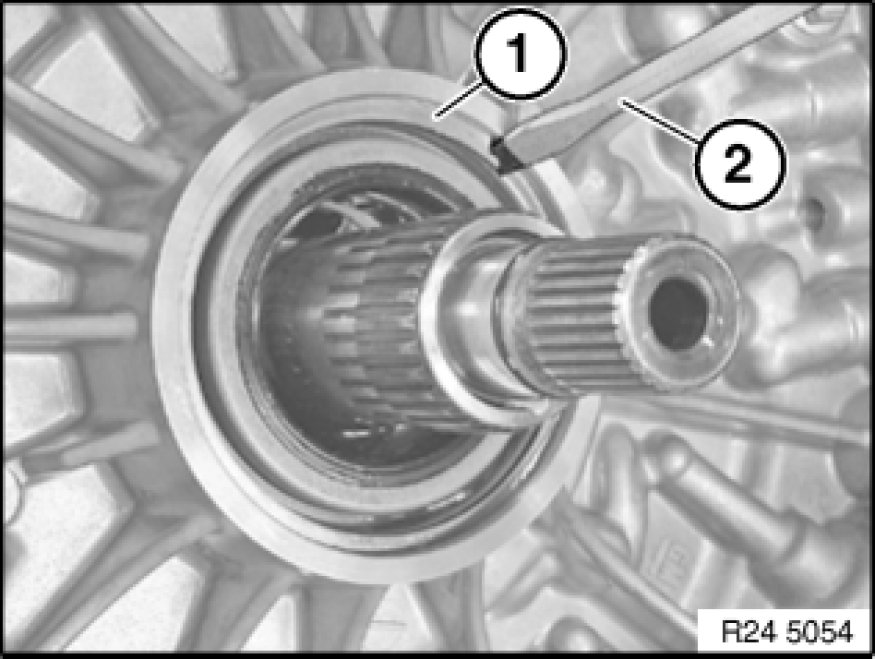
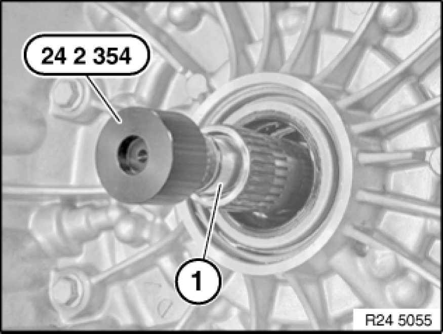
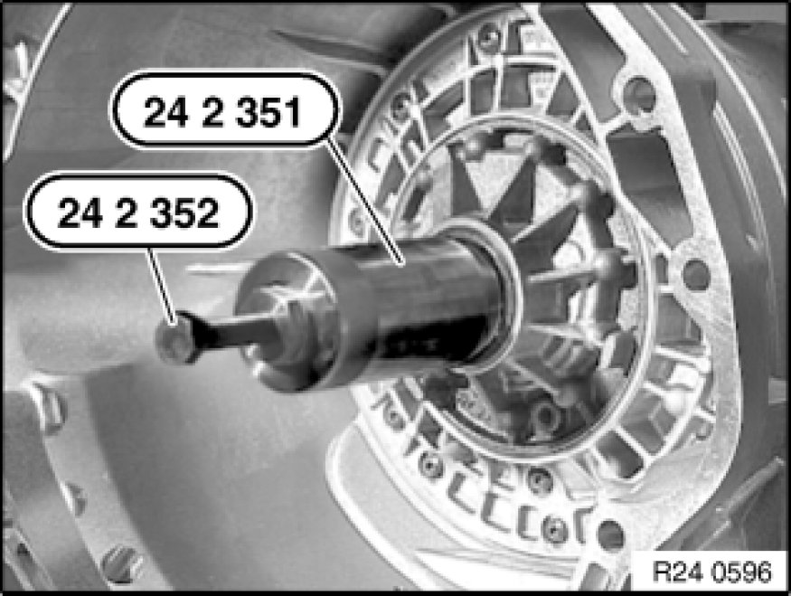
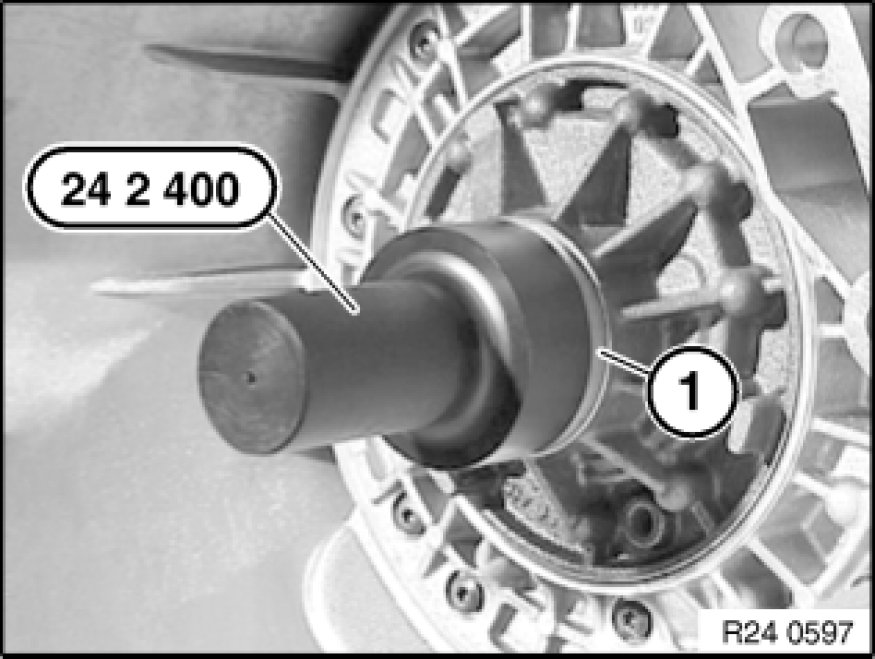

24 31 012 Replacing Torque Converter Shaft Seal (GA6L45R)
24 31 012 - Replacing torque converter shaft seal (GA6L45R)

Special tools required:

Necessary preliminary tasks:
- Remove automatic transmission 24 00 032 Removing and Installing Automatic Transmission (GA6L45R).

Important!
After completion of work, check transmission oil level 00 11 237 Checking/Topping Up Fluid Level In Automatic Transmission (GA6L45R).
Use only approved transmission oil.
Failure to comply with this instruction will result in serious damage to the transmission.

Secure transmission with special tool 24 0 200 24 0 200 Support to assembly stand 00 1 450.
Remove torque converter 24 40 013 Removing and Installing/Replacing Torque Converter (GA6L45R).

Remove retaining ring (1) with a suitable tool (2).

Attach special tool 24 2 354 24 2 350 Extractor to drive shaft (1).

Screw in special tool 24 2 351 24 2 350 Extractor until it is firmly connected with shaft seal.
Screw in special tool 24 2 352 24 2 350 Extractor to remove shaft seal.

Oil sealing lip on shaft seal.
Drive in shaft seal (1) with special tool 24 2 360 24 2 360 Drift as far as it will go.